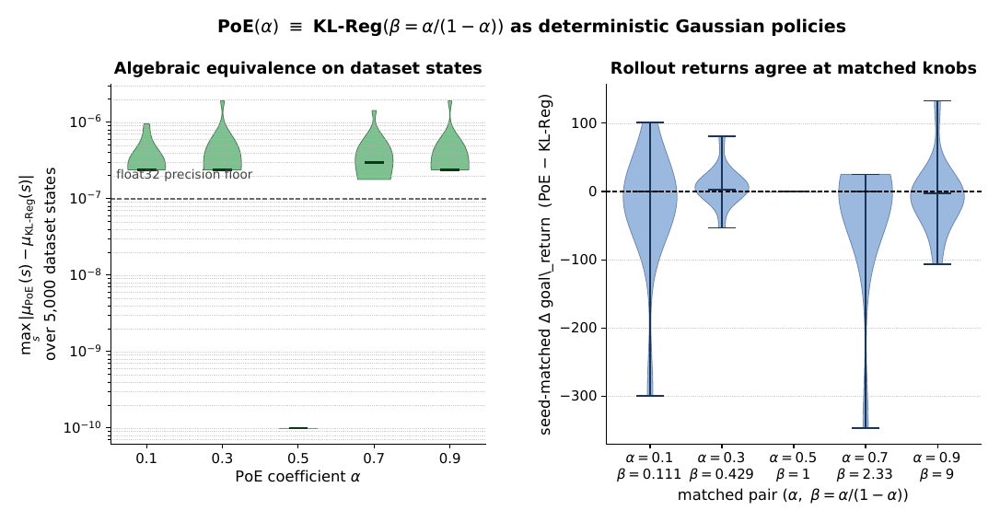
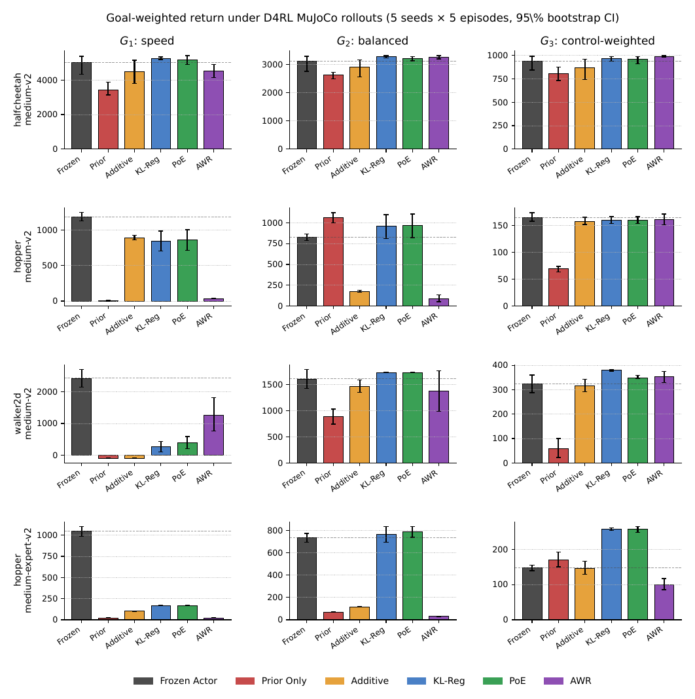
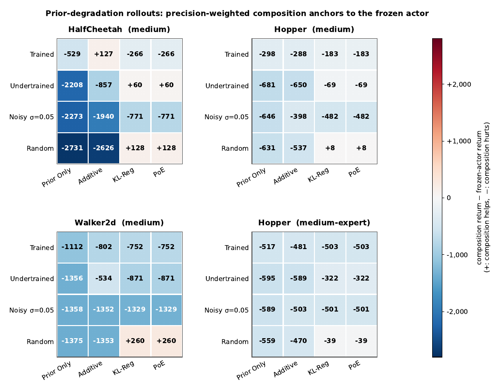
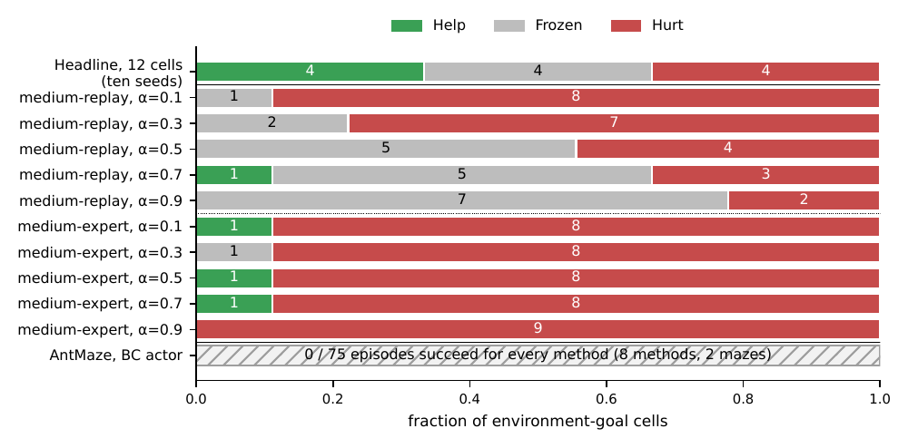

An offline RL actor has been trained and approved, then the deployment objective changes and the actor cannot be retrained. We steer it at deployment by composing it with a goal-conditioned prior as a Product of Experts. For diagonal-Gaussian policies this is exactly the same deterministic policy as KL-regularized adaptation with β = α/(1−α). Its real value is graceful degradation: when the prior is bad, it stays with the frozen actor, while additive and prior-only adaptation collapse. Its limit is the actor itself: steering can help or preserve a competent actor, can hurt one near its ceiling, and cannot rescue one that fails.
β = α/(1−α)
PoE ≡ KL-Reg
≤ 2×10−6
Max PoE vs KL-Reg mean gap
4 / 4 / 4
Help / Frozen / Hurt, 10 seeds
0
Actor gradient steps
The Setting
The objective moved. The actor cannot.
Offline RL methods handle objective change during training, through conservative value estimates or behavior regularization. A common deployment situation is left out: the actor has already been trained and validated, the objective is revised afterwards, and changing the actor is not an option because data access is limited, retraining is expensive, or every policy change has to go back through governance and revalidation.
no new interactionno new data collectionno actor retrainingstay conservative w.r.t. the validated actor
π
A frozen actor
A diagonal-Gaussian actor πθ(a | s), trained once by behavioral cloning on a fixed D4RL dataset, then frozen. Its parameters are never touched again.
g
A shifted goal
The deployment goal g weights three reward channels recovered from the dataset (forward progress, control magnitude, alive), giving rg(s,a) = g · rc(s,a). We test speed, balanced, and control-weighted goals.
ρ
A separate prior
A goal-conditioned prior ρφ(a | s,g), trained on the same offline data with goal-weighted BC plus a contrastive ranking term. It reweights dataset actions and never queries a critic.
Method
One rule, two names
The deployed policy is the frozen actor multiplied by the prior, with one knob α ∈ [0,1] trading conservatism for adaptation. α → 1 gives back the frozen actor; α → 0 gives the prior restricted to actions the actor supports. In finite action spaces the product never puts mass where the actor puts none.
Product-of-Experts refinement · Eq. 2
πref(a | s, g) ∝ πθ(a | s)α ρφ(a | s, g)1−α
This is the unique maximizer of an entropy-regularized objective, equivalently argminπ [ α KL(π‖πθ) + (1−α) KL(π‖ρφ) ], the KL barycenter of actor and prior (Theorem 1).
Gaussian closed form · Sec. 4.3
Σref−1 = αΣθ−1 + (1−α)Σφ−1
μref = Σref [ αΣθ−1μθ + (1−α)Σφ−1μφ ]
A precision-weighted average. A confident prior moves the action; a diffuse one barely does. This is where the robustness comes from.
KL-regularized adaptation
argminπ Eπ[ −log ρφ ] + β KL(π ‖ πθ)
The familiar frozen-actor trust-region update. Treated as a separate mechanism in prior work, but for diagonal Gaussians it is the same deterministic policy as PoE once β = α/(1−α).
From KL-Reg to PoE in four steps
(i)
π* ∝ πθ ρφ1/β
(ii)
ΛKL(β) = Σθ−1 + β−1Σφ−1
(iii)
β = α/(1−α) ⇒ ΛKL = α−1ΛPoE
(iv)
μKL = μref, ΣPoE = α−1ΣKL
The natural parameters are scalar multiples, so the means coincide exactly and the covariances differ by the global factor 1/α, which cancels under deterministic (mean-action) deployment. The Gaussian algebra is standard. What the paper adds is making the identity explicit for frozen-actor deployment and organizing the empirical study around it. The grid α ∈ {0.1, 0.3, 0.5, 0.7, 0.9} maps to β ∈ {0.111, 0.429, 1, 2.333, 9}.
Try It
Why a bad prior is ignored
A one-dimensional version of the paper's own example. The frozen actor is N(0, 1) and the prior's mean is 1. Move α and the prior's spread, and compare where the precision-weighted PoE action lands with where an additive mix (λ = 0.5) lands. Curves are drawn at equal height so their shapes can be compared; the markers show the deployed (mean) action.
Frozen actor πθPrior ρφPoE / KL-RegAdditive mix action
matched KL weight β = α/(1−α) = 1.000
log scale, 0.1 (confident) to 10 (diffuse)
0.990
PoE action
0.500
Additive action
0.141
PoE std
0.00
KL(PoE ‖ actor)
Interactive. With α = 0.5, a prior N(1, 0.12) moves the mean to 0.99, while a prior N(1, 102) moves it only to 0.0099 (paper, Fig. 3 caption). Additive mixing ignores confidence and always lands halfway, which is how it carries a damaged prior's mean straight into the deployed action.
Results
Three things the rollouts show
All main results are real MuJoCo rollouts with deterministic mean actions: D4RL HalfCheetah, Hopper and Walker2d medium plus Hopper medium-expert, three goals, 5 seeds × 5 episodes per cell (3,900 headline episodes, plus 3,900 more for a ten-seed replication), with 95% bootstrap CIs and seed-matched paired differences. A cell is Help if the best composition beats the frozen actor by more than the half-width ε of the actor's CI, Hurt if it falls short by more than ε, and Frozen otherwise.
1 · PoE and KL-Reg really are one policy
On 5,000 dataset states per environment and every α, |μPoE − μKL-Reg| ≤ 2×10−6, at float-32 precision. At α = 0.5, β = 1, the rollouts give bit-identical returns and episode lengths in all 12 cells. Elsewhere the paired CIs include zero; the leftover spread is MuJoCo amplifying float-level jitter over 1,000 steps, not a difference between policies.

Figure 1. Empirical check of the identity. Left: |μPoE − μKL-Reg| over 5,000 dataset states per α (log scale; dashed line is float-32 precision). Right: seed-matched rollout return differences at each matched (α, β) pair, pooled over all 12 cells.
2 · With a good prior: help, tie, or hurt
Steering is not a free improvement. With ten seeds the 12 headline cells split evenly: 4 help, 4 tie, 4 hurt (five seeds: 4/5/3). HalfCheetah ties on every goal. The speed goal G1 hurts wherever the actor is already near its velocity ceiling.
Setting
Goal
Δ (5 seeds)
Δ (10 seeds)
CI half-width (10 seeds)
Verdict
HalfCheetah-M
G1 speed
+247.6
+232.1
359.2
Frozen
HalfCheetah-M
G2 balanced
+167.5
+135.2
186.4
Frozen
HalfCheetah-M
G3 control
+29.0
+29.0
50.0
Frozen
Hopper-M
G1 speed
−291.0
−338.6
45.4
Hurt
Hopper-M
G2 balanced
+143.8
+147.6
30.4
Help
Hopper-M
G3 control
−4.6
−11.0
6.3
Frozen → Hurt
Walker2d-M
G1 speed
−2,029.9
−2,013.8
159.8
Hurt
Walker2d-M
G2 balanced
+123.5
+86.4
101.6
Frozen
Walker2d-M
G3 control
+55.4
+22.4
21.3
Help
Hopper-ME
G1 speed
−877.8
−892.0
55.8
Hurt
Hopper-ME
G2 balanced
+54.5
+74.7
37.2
Help
Hopper-ME
G3 control
+110.2
+112.4
7.6
Help
Table 1. Best-in-family composition minus frozen actor, in goal-weighted return. The only verdict that changes with ten seeds is Hopper-medium G3, which moves from a tie to a small hurt (Δ = −11.0 against ε = 6.3).

Figure 2. Headline rollouts: mean goal-weighted return with 95% bootstrap CIs, 25 episodes per cell. Rows are settings, columns are goals; each composition family is shown at its best operating point.
3 · With a bad prior: it stays home
This is the paper's strongest practical result. We replace the trained prior with undertrained, noisy (σ = 0.05 parameter noise) and random versions. Prior-only and additive deployment collapse. Precision-weighted composition stays close to the frozen actor, because a degraded prior has low precision and the posterior mean shrinks back toward the actor.
Mean goal-weighted return under a random prior
Frozen actor
1,410.5
PoE / KL-Reg
1,499.8
Additive (λ = 0.5)
164.2
Prior only
86.3
Under the noisy prior the order holds (Prior only 193.8, Additive 362.0, PoE/KL-Reg 639.6), and under the undertrained prior too (200.4 / 753.3 / 1,110.0). A random prior can even score above the trained one, but only because it is ignored: mean KL to the frozen actor is 0.61 under the random prior versus 10.4 under the trained one.

Figure 3. Prior-degradation rollouts at a fixed operating point (PoE α = 0.5, matched KL-Reg β = 1, Additive λ = 0.5), shown as composition minus frozen-actor return, averaged over goals. The comparison that matters is within a row: under the same random prior, Prior Only and Additive collapse while PoE/KL-Reg do not.
Choosing α without rollouts
A KL-budget rule picks the strongest steering (smallest α) whose mean dataset-state KL from the frozen actor stays within a budget κ. It needs only the dataset, the actor and the prior. On halfcheetah-medium-v2 (scored with the off-policy diagnostic evaluator, not rollouts), its loss against the hindsight-best α is at most 0.020 across κ ∈ {0.1, 0.3, 0.5, 1.0} and all goals, and zero at κ = 1.0. κ is a deployment design choice, trading goal-directed gain for proximity to the validated actor.
Where It Stops
The actor-competence ceiling
Does turning the knob fix the hurt cells? No. An α sweep over six harder settings (medium-replay and medium-expert for each locomotion task, 5,850 episodes) shows the boundary is set by how competent the frozen actor is, not by α. The equivalence still holds: at α = 0.5, |μPoE − μKL-Reg| is exactly 0 in all 18 cells.

Figure 4. Help / Frozen / Hurt counts for the 12 headline cells (ten seeds) and for every harder-regime cell–α combination (9 cells per row). Medium-replay drifts toward ties as α grows; medium-expert stays hurt at every α. Walker2d medium-expert is the clearest case: the frozen actor reaches 4,920 on G1, while PoE falls to {399, 72, 62, 63, 78} across α. Near the locomotion ceiling, even small precision-weighted shifts push the action off the high-support ridge.
∅
An actor that fails stays failed
AntMaze BC actors that never reach the goal solve 0 of 75 episodes, and every method inherits that zero. With six umaze actors at 39–67% success, PoE/KL-Reg keep 24–69% while Prior Only collapses to 0%, but composition never beats the frozen actor.
✋
Beyond locomotion: Adroit
On pen-human, composition preserves a moderately competent actor (a tie on every goal at α = 0.9) while prior-only and additive steering hurt, with additive at 0% success. On hammer-human, where the actor is incompetent, no method succeeds.
ρ
The prior matters near the ceiling
Swap the contrastive prior for one trained by advantage-weighted regression and the headline split moves from 4/5/3 to 4/8/0: no cell hurts, and Hopper medium-expert G1 goes from −878 to +117. The hurt cells come from a near-ceiling actor combined with the contrastive prior.
Baselines
Critics help in places, but do not remove the boundary
Critic-guided steering is a strong option when a reliable critic is affordable, validated, and its β can be tuned. It is not our default for governed deployment: its best β was picked per cell from realized returns with no rollout-free selector, single-β operation is fragile, it inherits critic error directly, and a critic in the action path is heavier to revalidate than a one-knob reweighting.
Method
Help / Frozen / Hurt
Needs a critic
Closed-form ≡
What it falls back on
PoE / KL-Reg (best α)
4 / 5 / 3
No
Yes
The frozen actor, when the prior is weak
CQL-guided (best β)
5 / 7 / 0
Yes
No
The critic, errors included
IQL-guided (best β)
6 / 6 / 0
Yes
No
The critic, errors included
Critic-gradient (AWR/AWAC-style)
improves 3 of 12
Yes
No
A raw ∇aQ step, off-support
Table 2. Five-seed splits on the 12 headline cells, each family swept over its knob (α ∈ {0.1,…,0.9}; β ∈ {0.5, 1, 3}) and shown at its best value per cell. The critic-gradient step falls more than 100 return points below Frozen in 7 cells once it leaves the data support. At β = 1.0, IQL collapses to about 5 return on all three harder-regime hopper medium-expert cells. An SF/GPI baseline is competitive on HalfCheetah but fragile on Hopper and Walker2d.
In Practice
Deciding before you deploy
A dataset-only sensitivity score S, the closed-form mean KL between the α = 0.5 composition and the frozen actor on dataset states, ranks steering risk without any rollouts. On the 12 headline cells the three five-seed hurt cells score highest (min hurt 5.06, max non-hurt 4.96; Spearman −0.77, p = 0.003 against return deltas; pooled over 30 cells −0.67, p < 10−4). The separation is retrospective and imperfect, and no threshold transfers across regimes, but it suggests a simple procedure:
1
Retrain if the actor itself is incompetent
Near-zero offline success (as in AntMaze) is a dataset-visible sign that no reweighting will help.
2
Abstain when S exceeds a prespecified threshold
A large S means steering moves the validated actor far. Actor–prior log-density mismatch and the actor's normalized-return saturation point the same way.
3
Otherwise steer within a dataset-state KL budget
Pick α with the KL-budget rule. The worst case of a bad prior is staying close to the actor you already validated.
Theory, read for structure only
Theorem 1 (variational optimality): with finite actions, PoE is the unique maximizer of Eπ[α log πθ + (1−α) log ρφ] + H(π) on the common support. Theorem 2 splits the return change into a one-step advantage gain minus a total-variation deviation penalty with coefficient 2γ/(1−γ)2, which is 19,800 at γ = 0.99. That makes the bound vacuous as a predictor, and we do not use it to classify cells. Its value is the reading it gives: help cells pair a useful gain with small deviation, hurt cells pair a small gain with deviations that leave the region of reliable behavior.
Limitations
What this does not claim
Policy class. The closed form and the equivalence assume diagonal-Gaussian actors and priors. For mixture or diffusion policies the product has no closed form, so extending the policy class changes the method, not just the analysis.
Deterministic deployment. PoE ≡ KL-Reg holds at the mean action used in our rollouts. Under stochastic sampling the two rules have different covariances and different stochastic KLs.
Near-ceiling actors. Composition hurts 3 of 12 headline cells with five seeds (4 with ten) and most medium-expert cells at every α.
Scope. D4RL locomotion, AntMaze and two Adroit tasks, all with BC-trained actors and linear reward-component goal shifts. Objectives that need behavior outside the actor's support, such as reverse motion, are out of scope by design. The KL-budget selector was evaluated with the off-policy evaluator, and the sensitivity score was validated retrospectively.
Citation
BibTeX
If you find this work useful, please consider citing:
@inproceedings{hossain2026policies,
title = {When Policies Cannot Be Retrained: A Unified Closed-Form View
of Post-Training Steering in Offline Reinforcement Learning},
author = {Hossain, Elias and Basher, Mohammad Jahid Ibna and Garibay, Ivan
and Garibay, Ozlem and Yousefi, Niloofar},
booktitle = {Advances in Neural Information Processing Systems},
year = {2026}
}